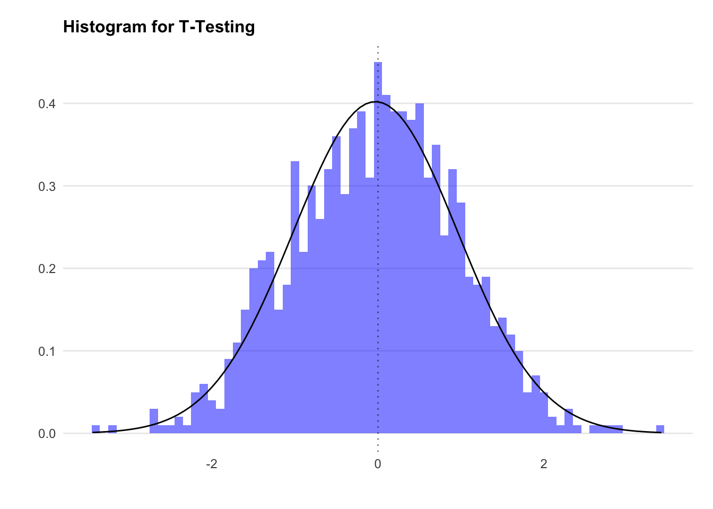
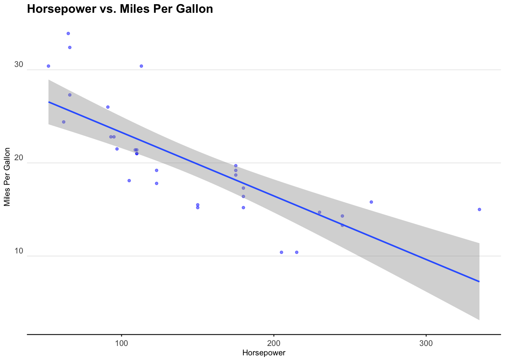
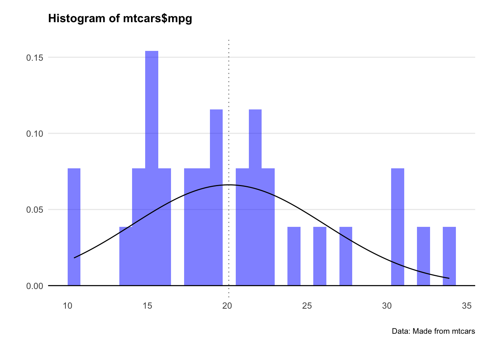
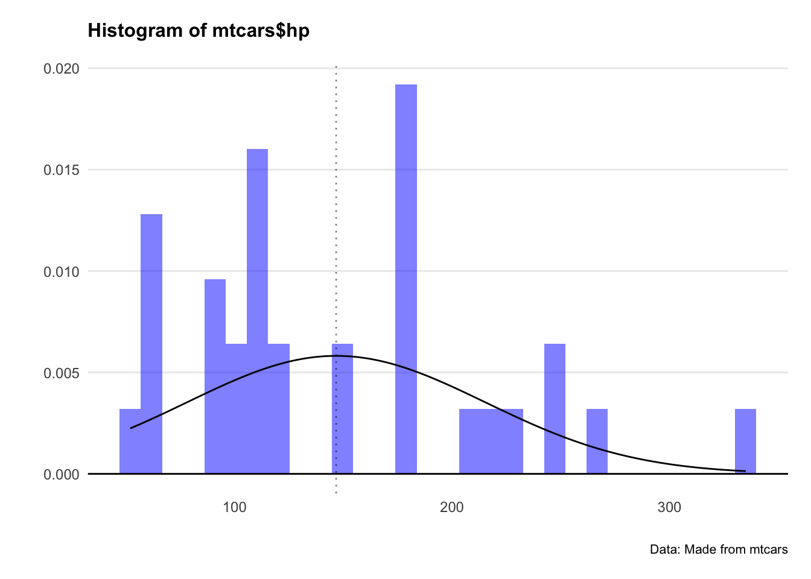
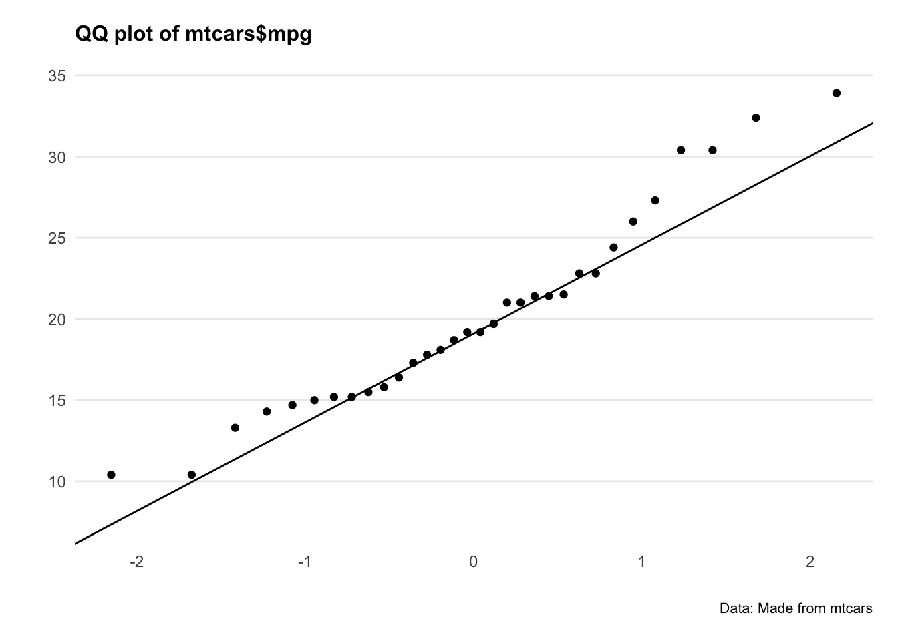
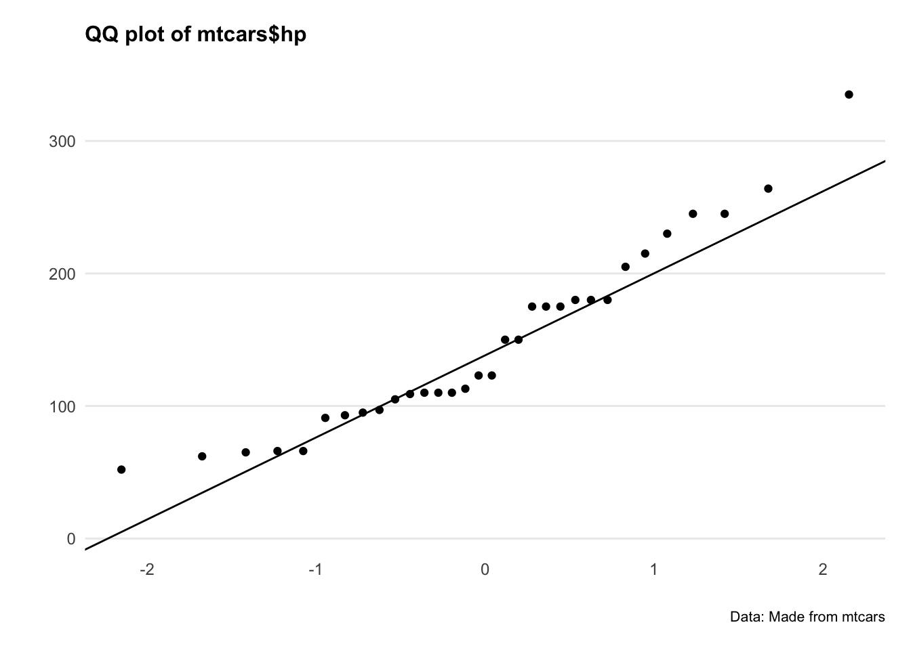
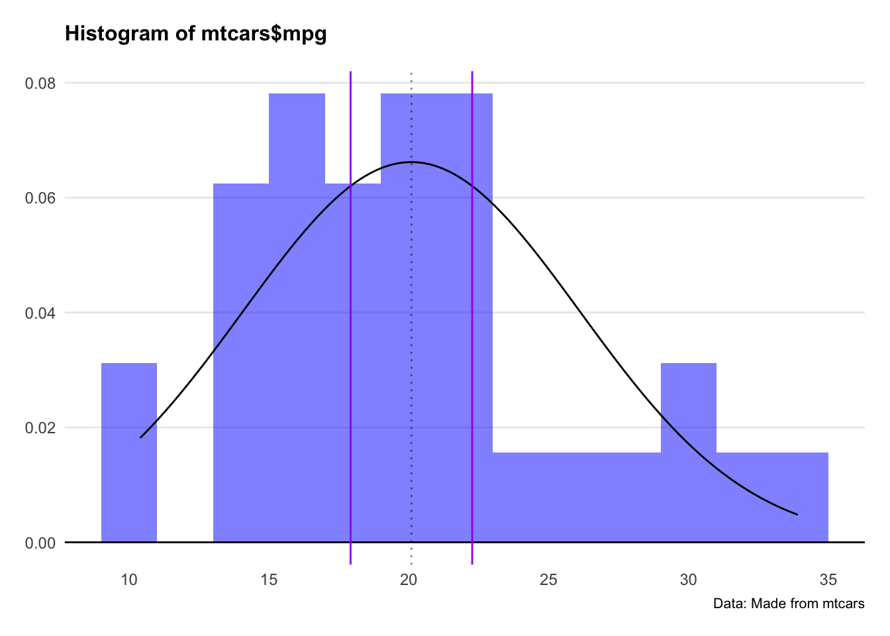
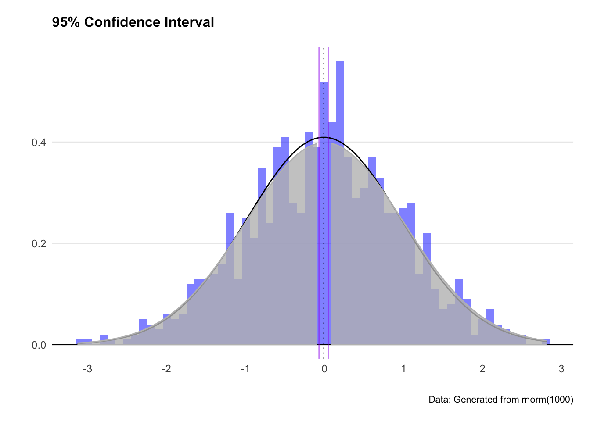
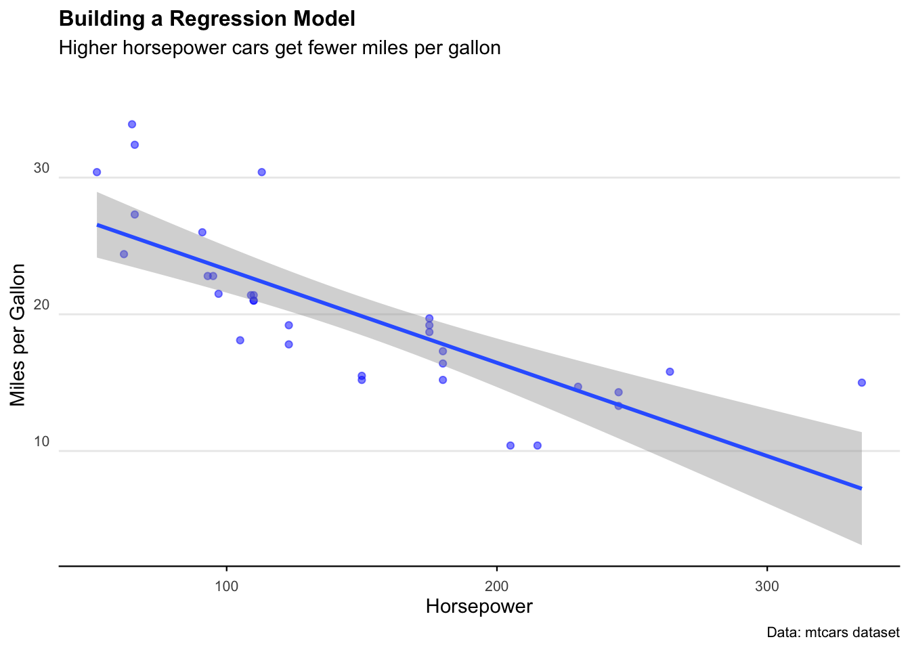

# Load necessary packages
library(ggridges)
library(ggplot2)
library(ggrepel) # Avoid overlapping text in plots
library(viridis) # Color scales
library(readxl) # Read Excel files
library(dplyr) # Data manipulation
library(stringr) # String operations
library(tidyr) # Data tidying (replaces reshape)
library(lubridate) # Work with dates
library(gapminder) # Gapminder dataset
library(ggalt) # Extensions to ggplot (dumbbell plots, etc.)
library(purrr) # Functional programming
library(scales) # Scaling tools for ggplot
library(aTSA) # Time series analysis
library(readrba) # For working with Reserve Bank of Australia dataHypothesis testing
A quick refresher
Hypothesis testing is a way of validating if a claim about a population (e.g. a data set) is correct. Getting data on a whole population (e.g. everyone in Australia) is hard. So, to validate a hypothesis, we use random samples from a population instead.
The language when dealing with hypothesis testing is purposefully janky.
When looking at the outputs of our hypothesis test, we consider p-values. Note: There’s lots wrong with p-values that we won’t bother getting into right now. The long story short is if you make your null hypothesis ultra specific and only report when your p-value on your millionth iteration of a test is below 0.05… bad science is likely to get published and cited.
What we need to know:
A small p-value (typically less than or equal to 0.05) indicates strong evidence against the null hypothesis, so we reject it.
A large p-value (greater than 0.05) indicates weak evidence against the null hypothesis, so you fail to reject it.
Let’s load in some packages and get started.
T-testing our first hypothesis
We’ll start by creating a normally distributed random dataset using rnorm.
By default the rnorm function will generate a dataset that has a mean of 0 and a standard deviation of 1, but let’s state it explicitly to keep things simple.
set.seed(40)
dataset1 <- data.frame(variable1 = rnorm(1000, mean = 0, sd = 1))Let’s chart the distribution.
ggplot() +
geom_histogram(aes(x = dataset1$variable1, y = ..density..),
binwidth = 0.1, fill = "blue", alpha = 0.5
) +
stat_function(fun = dnorm, args = list(
mean = mean(dataset1$variable1),
sd = sd(dataset1$variable1)
)) +
geom_vline(xintercept = 0, linetype = "dotted", alpha = 0.5) +
labs(title = "Histogram for T-Testing", x = "", y = "") +
theme_minimal() +
theme(plot.title = element_text(face = "bold", size = 12)) +
theme(plot.subtitle = element_text(size = 11)) +
theme(plot.caption = element_text(size = 8)) +
theme(axis.text = element_text(size = 9)) +
theme(panel.grid.minor = element_blank()) +
theme(panel.grid.major.x = element_blank()) +
theme(plot.subtitle = element_text(margin = ggplot2::margin(0, 0, 15, 0))) +
theme(plot.margin = unit(c(0.5, 0.5, 0.5, 0.5), "cm"))
We know that the mean of dataset1 will be approximately zero (because we set it)… but let’s check anyway.
# Find the mean of dataset1
mean(dataset1$variable1)Now let’s run our first hypothesis test. We’ll use the t.test function. This is in the format of t.test(data, null_hypothesis).
We’ll start with the null hypothesis that the mean for dataset1$variable1 is 5. This is a two tailed t-test, as we will reject the null if we’re confident the mean is either above or below 5.
# Hypothesis test
t.test(dataset1$variable1, mu = 5)We see the p-value here is tiny, meaning we reject the null hypothesis. That is to say, the mean for dataset1$variable1 is not 5.
Understanding tailed tests
By default, t.test assumes a two-tailed test with a 95% confidence level. However, sometimes we need to test if one variable is greater or smaller than another (rather than just different from the null). This is when we use one-tailed tests.
Next, we test whether the mean is -0.03 using a one-tailed test:
# Hypothesis test
t.test(dataset1$variable1, mu = -0.03, alternative = "greater")We see here the p-value is greater than 0.05, leading us to fail to reject the null hypothesis. In a sentence, we cannot say that the mean of dataset1$variable1 is different to 0.01.
Correlation
A correlation coefficient measures the direction and strength of the relationship between two variables. However, correlation calculations assume normal distributions.
Let’s examine the relationship between mpg and hp in the mtcars dataset.
ggplot2::ggplot(mtcars, aes(x = hp, y = mpg)) +
geom_point(color = "blue", alpha = 0.5) +
geom_smooth(method = "lm") +
labs(
title = "Horsepower vs. Miles Per Gallon",
x = "Horsepower",
y = "Miles Per Gallon"
) +
theme_minimal(base_size = 8) +
theme(
legend.position = "bottom",
plot.title = element_text(face = "bold", size = 12),
plot.subtitle = element_text(size = 11, margin = ggplot2::margin(0, 0, 25, 0)),
plot.caption = element_text(size = 8),
axis.text = element_text(size = 8),
axis.title.y = element_text(margin = ggplot2::margin(r = 3)),
axis.text.y = element_text(vjust = -0.5, margin = ggplot2::margin(l = 20, r = -10)),
panel.grid.minor = element_blank(),
panel.grid.major.x = element_blank(),
axis.line.x = element_line(colour = "black", size = 0.4),
axis.ticks.x = element_line(colour = "black", size = 0.4)
)
We see that miles per gallon is correlated with horsepower. It’s a negative relationship, meaning the more horsepower in a car, the less miles per gallon the car exhibits.
We can use the cor.test to tell us the correlation coefficient and the p-value of the correlation.
We specify the method as ‘pearson’ for the Pearson correlation coefficient.
cor.test(mtcars$hp, mtcars$mpg, method = "pearson")Since Pearson’s method assumes normality, we check the distributions. Let’s plot a histogram for both hp and mpg.
ggplot() +
geom_histogram(aes(x = mtcars$mpg, y = ..density..), fill = "blue", alpha = 0.5) +
stat_function(
fun = dnorm,
args = list(mean = mean(mtcars$mpg), sd = sd(mtcars$mpg))
) +
geom_hline(yintercept = 0) +
geom_vline(xintercept = mean(mtcars$mpg), linetype = "dotted", alpha = 0.5) +
labs(
title = "Histogram of mtcars$mpg",
caption = "Data: Made from mtcars",
x = "",
y = ""
) +
theme_minimal() +
theme(panel.spacing.x = unit(10, "mm")) +
theme(legend.position = "none") +
theme(plot.title = element_text(face = "bold", size = 12)) +
theme(plot.subtitle = element_text(size = 11)) +
theme(plot.caption = element_text(size = 8)) +
theme(axis.text = element_text(size = 9)) +
theme(panel.grid.minor = element_blank()) +
theme(panel.grid.major.x = element_blank()) +
theme(plot.title = element_text(margin = ggplot2::margin(0, 0, 15, 0))) +
theme(plot.margin = unit(c(0.5, 0.5, 0.5, 0.5), "cm"))
ggplot() +
geom_histogram(aes(x = mtcars$hp, y = ..density..), fill = "blue", alpha = 0.5) +
stat_function(
fun = dnorm,
args = list(mean = mean(mtcars$hp), sd = sd(mtcars$hp))
) +
geom_hline(yintercept = 0) +
geom_vline(xintercept = mean(mtcars$hp), linetype = "dotted", alpha = 0.5) +
labs(
title = "Histogram of mtcars$hp",
caption = "Data: Made from mtcars",
x = "",
y = ""
) +
theme_minimal() +
theme(panel.spacing.x = unit(10, "mm")) +
theme(legend.position = "none") +
theme(plot.title = element_text(face = "bold", size = 12)) +
theme(plot.subtitle = element_text(size = 11)) +
theme(plot.caption = element_text(size = 8)) +
theme(axis.text = element_text(size = 9)) +
theme(panel.grid.minor = element_blank()) +
theme(panel.grid.major.x = element_blank()) +
theme(plot.title = element_text(margin = ggplot2::margin(0, 0, 15, 0))) +
theme(plot.margin = unit(c(0.5, 0.5, 0.5, 0.5), "cm"))
Crikey… they don’t look very normal at all.
Let’s plot QQ plots of our variables and see what’s going on.
ggplot(mtcars, aes(sample = mpg)) +
geom_qq() +
geom_qq_line() +
labs(
title = "QQ plot of mtcars$mpg",
caption = "Data: Made from mtcars",
x = "",
y = ""
) +
theme_minimal() +
theme(panel.spacing.x = unit(10, "mm")) +
theme(legend.position = "none") +
theme(plot.title = element_text(face = "bold", size = 12)) +
theme(plot.subtitle = element_text(size = 11)) +
theme(plot.caption = element_text(size = 8)) +
theme(axis.text = element_text(size = 9)) +
theme(panel.grid.minor = element_blank()) +
theme(panel.grid.major.x = element_blank()) +
theme(plot.title = element_text(margin = ggplot2::margin(0, 0, 15, 0))) +
theme(plot.margin = unit(c(0.5, 0.5, 0.5, 0.5), "cm"))
ggplot(mtcars, aes(sample = hp)) +
geom_qq() +
geom_qq_line() +
labs(
title = "QQ plot of mtcars$hp",
caption = "Data: Made from mtcars",
x = "",
y = ""
) +
theme_minimal() +
theme(panel.spacing.x = unit(10, "mm")) +
theme(legend.position = "none") +
theme(plot.title = element_text(face = "bold", size = 12)) +
theme(plot.subtitle = element_text(size = 11)) +
theme(plot.caption = element_text(size = 8)) +
theme(axis.text = element_text(size = 9)) +
theme(panel.grid.minor = element_blank()) +
theme(panel.grid.major.x = element_blank()) +
theme(plot.title = element_text(margin = ggplot2::margin(0, 0, 15, 0))) +
theme(plot.margin = unit(c(0.5, 0.5, 0.5, 0.5), "cm"))
Hmm okay, both series are a bit all over the shop. Let’s do a statistical test to confirm.
The Shapiro-Wilk’s method is widely used for normality testing. The null hypothesis of this tests is that the sample distribution is normal. If the test is significant, the distribution is non-normal.
shapiro.test(mtcars$mpg)
shapiro.test(mtcars$hp)Confidence intervals for the mean
We can calkcualte the confidence interval for the mean. This measures the variance of the normal distribution, and gives us an idea of how ‘clustered’ the values are to the mean.
There are 4 steps to do this:
Calculate the mean
Calculate the standard error of the mean
Find the t-score that corresponds to the confidence level
Calculate the margin of error and construct the confidence interval
mpg.mean <- mean(mtcars$mpg)
print(mpg.mean)
mpg.n <- length(mtcars$mpg)
mpg.sd <- sd(mtcars$mpg)
mpg.se <- mpg.sd / sqrt(mpg.n)
print(mpg.se)
alpha <- 0.05
degrees.freedom <- mpg.n - 1
t.score <- qt(p = alpha / 2, df = degrees.freedom, lower.tail = F)
print(t.score)
mpg.error <- t.score * mpg.se
lower.bound <- mpg.mean - mpg.error
upper.bound <- mpg.mean + mpg.error
print(c(lower.bound, upper.bound))For the lazy folks among us - there’s also this quick and dirty way of doing it.
# Calculate the mean and standard error
mpg.model <- lm(mpg ~ 1, mtcars)
# Calculate the confidence interval
confint(mpg.model, level = 0.95)Great. Let’s plot this interval on the distribution.
ggplot(mtcars, aes(x = mpg)) +
geom_histogram(aes(y = ..density..), binwidth = 2, fill = "blue", alpha = 0.5) +
stat_function(fun = dnorm, args = list(mean = mean(mtcars$mpg), sd = sd(mtcars$mpg))) +
geom_hline(yintercept = 0) +
geom_vline(xintercept = mean(mtcars$mpg), linetype = "dotted", alpha = 0.5) +
geom_vline(xintercept = c(lower.bound, upper.bound), col = "purple") +
labs(
title = "Histogram of mtcars$mpg",
caption = "Data: Made from mtcars",
x = NULL,
y = NULL
) +
theme_minimal() +
theme(
panel.spacing.x = unit(10, "mm"),
legend.position = "none",
plot.title = element_text(face = "bold", size = 12, margin = ggplot2::margin(0, 0, 15, 0)),
plot.subtitle = element_text(size = 11),
plot.caption = element_text(size = 8),
axis.text = element_text(size = 9),
panel.grid.minor = element_blank(),
panel.grid.major.x = element_blank(),
plot.margin = unit(c(0.5, 0.5, 0.5, 0.5), "cm")
)
Two things we note here: Firstly, the distribution doesn’t look that normal. Secondly, the 95% confidence interval looks narrow as a result.
Let’s do the same analysis with an actual normal distribution and see what happens.
set.seed(404)
dataset2 <- data.frame(variable1 = rnorm(1000, mean = 0, sd = 1))
df2.mean <- mean(dataset2$variable1)
df2.n <- length(dataset2$variable1)
df2.sd <- sd(dataset2$variable1)
df2.se <- df2.sd / sqrt(df2.n) # Fixed variable name typo
alpha <- 0.05
t.score <- qt(p = alpha / 2, df = df2.n - 1, lower.tail = FALSE)
df2.error <- t.score * df2.se
lower.bound.df2 <- df2.mean - df2.error
upper.bound.df2 <- df2.mean + df2.error
# Functions to shade the tails
shade_tail <- function(x, bound, direction) {
y <- dnorm(x, mean = 0, sd = 1)
y[(direction == "upper" & x < bound) | (direction == "lower" & x > bound)] <- NA
return(y)
}
# Plot
ggplot(dataset2, aes(x = variable1)) +
geom_histogram(aes(y = ..density..), binwidth = 0.1, fill = "blue", alpha = 0.5) +
stat_function(fun = dnorm, args = list(mean = df2.mean, sd = df2.sd)) +
geom_hline(yintercept = 0) +
geom_vline(
xintercept = c(df2.mean, lower.bound.df2, upper.bound.df2),
linetype = c("dotted", "solid", "solid"), col = c("black", "purple", "purple"), alpha = 0.5
) +
stat_function(
fun = function(x) shade_tail(x, upper.bound.df2, "upper"),
geom = "area", fill = "grey", col = "grey", alpha = 0.8
) +
stat_function(
fun = function(x) shade_tail(x, lower.bound.df2, "lower"),
geom = "area", fill = "grey", col = "grey", alpha = 0.8
) +
labs(
title = "95% Confidence Interval",
caption = "Data: Generated from rnorm(1000)",
x = "", y = ""
) +
theme_minimal() +
scale_x_continuous(breaks = seq(-3, 3, by = 1)) +
theme(
panel.spacing.x = unit(10, "mm"),
legend.position = "none",
plot.title = element_text(face = "bold", size = 12, margin = ggplot2::margin(0, 0, 15, 0)),
plot.subtitle = element_text(size = 11),
plot.caption = element_text(size = 8),
axis.text = element_text(size = 9),
panel.grid.minor = element_blank(),
panel.grid.major.x = element_blank(),
plot.margin = unit(c(0.5, 0.5, 0.5, 0.5), "cm")
)
Great - we’ve got a more sensible looking plot, and greyed out the tails where our confidence interval excludes. We expect out observation to fall somewhere between the two purple lines (or more exactly between -2.1 and 2.1)
Confidence intervals for a model
We can also calculate the confidence interval around a linear model. This process shows how confident we can be about any single point in the linear estimate. If the confidence interval is wide, the estimate at that point is likely unreliable.
We’ll create a linear model of mpg on the y-axis and horsepower on the x-axis.
mtcars.lm <- lm(mpg ~ hp, data = mtcars)
summary(mtcars.lm)
predict(mtcars.lm, newdata = mtcars, interval = "confidence")Thegeom_smooth()function presents an easy way to plot a confidence interval on a chart.
The syntax in this example is:
geom_smooth(aes(x = hp, y = mpg), method='lm', level=0.95)
ggplot(mtcars, aes(x = hp, y = mpg)) +
geom_point(col = "blue", alpha = 0.5) +
geom_smooth(method = "lm", level = 0.95) +
labs(
title = "Building a Regression Model",
subtitle = "Higher horsepower cars get fewer miles per gallon",
caption = "Data: mtcars dataset",
x = "Horsepower",
y = "Miles per Gallon"
) +
theme_minimal() +
theme(
legend.position = "bottom",
plot.title = element_text(face = "bold", size = 12),
plot.subtitle = element_text(size = 11, margin = ggplot2::margin(0, 0, 25, 0)),
plot.caption = element_text(size = 8),
axis.text = element_text(size = 8),
panel.grid.minor = element_blank(),
panel.grid.major.x = element_blank(),
axis.title.y = element_text(margin = ggplot2::margin(r = 3)),
axis.text.y = element_text(vjust = -0.5, margin = ggplot2::margin(l = 20, r = -10)),
axis.line.x = element_line(colour = "black", size = 0.4),
axis.ticks.x = element_line(colour = "black", size = 0.4)
)
For a sanity check, let’s crank up the confidence level to 0.999 (meaning our interval should capture just about all the observations). We see the confidence interval band increases… but not by that much. Why?
Well remember how the data isn’t a very good normal distribution? That means the confidence interval function won’t be super accurate - especially at the extremes.